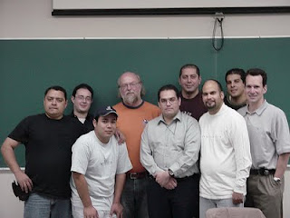

PICTURES


This website is a repository of all things James Gosling — biography, works, pictures — you name it. Follow on Facebook, YouTube or other media.
James Gosling OC born on 19 May 1955 is a Canadian computer scientist, best known as the founder and lead designer behind the Java programming language. Gosling attended William Aberhart High School in Calgary, Alberta. While in high school, he wrote some of the software to analyze data from the ISIS 2 satellite, working for the University of Calgary physics department. He received a Bachelor of Science from the University of Calgary and his M.A. and Ph.D. from Carnegie Mellon University, all in computer science. He wrote a version of Emacs called Gosling Emacs (Gosmacs) while working toward his doctorate. He built a multi-processor version of Unix for a 16-way computer system while at Carnegie Mellon University, before joining Sun Microsystems. He also developed several compilers and mail systems there. Gosling has two children, Katie and Kelsey, who are half siblings from Gosling's two marriages.
Gosling was with Sun Microsystems between 1984 and 2010. At Sun he invented an early Unix windowing system called NeWS, which became a lesser-used alternative to the still used X Window System, because Sun did not give it an open source license.
He is known as the father of the Java programming language. He got the idea for the Java VM while writing a program to port software from a PERQ by translating Perq Q-Code to VAX assembler and emulating the hardware. He is generally credited with having invented the Java programming language in 1994. He created the original design of Java and implemented the language's original compiler and virtual machine. Gosling traces the origins of the approach to his early graduate student days, when he created a p-code virtual machine for the lab's DEC VAX computer, so that his professor could run programs written in UCSD Pascal. In the work leading to Java at Sun, he saw that architecture-neutral execution for widely distributed programs could be achieved by implementing a similar philosophy: always program for the same virtual machine.
Another contribution of Gosling's was co-writing the "bundle" program, known as "shar", a utility thoroughly detailed in Brian Kernighan and Rob Pike's book The Unix Programming Environment.
He left Sun Microsystems on April 2, 2010, after it was acquired by the Oracle Corporation, citing reductions in pay, status, and decision-making ability, along with change of role and ethical challenges. He has since taken a very critical stance towards Oracle in interviews, noting that "during the integration meetings between Sun and Oracle, where we were being grilled about the patent situation between Sun and Google, we could see the Oracle lawyer's eyes sparkle." He clarified his position during the Oracle v. Google trial over Android: "While I have differences with Oracle, in this case they are in the right. Google totally slimed Sun. We were all really disturbed, even Jonathan Schwartz he just decided to put on a happy face and tried to turn lemons into lemonade, which annoyed a lot of folks at Sun." However, he approved of the court's ruling that APIs should not be copyrightable.
In March 2011, Gosling joined Google. Six months later, he followed his colleague Bill Vass and joined a startup called Liquid Robotics. In late 2016, Liquid Robotics was acquired by Boeing. Following the acquisition, Gosling left Liquid Robotics to work at Amazon Web Services as Distinguished Engineer in May 2017.
He is an advisor at the Scala company Lightbend, Independent Director at Jelastic, and Strategic Advisor for Eucalyptus, and is a board member of DIRTT Environmental Solutions.